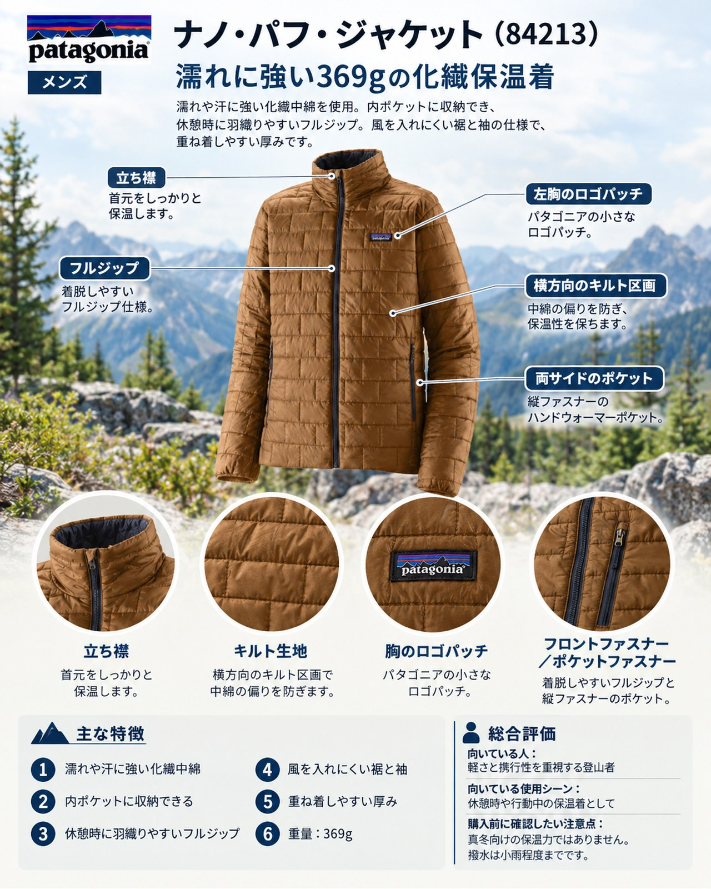

紅葉が山の上から下りてきて、高い山では初冠雪の便りも届く季節になりました。歩いているあいだは汗ばむほどでも、稜線での休憩や山頂での待ち時間には一気に体が冷えます。山小屋が閉まり始めるこの時期は、行動を止めたときに羽織る保温着の大切さが増します。今回は、パタゴニアの化繊インサレーション「メンズ・ナノ・パフ・ジャケット」を、休憩用の保温着という視点で紹介します。
この記事で紹介する商品
基本スペック
| 項目 | 内容 |
|---|---|
| 品番 | 84213 |
| 表地・裏地 | 1.3オンス・リサイクル・ポリエステル100％のリップストップ（PFASを意図的に添加しないDWR加工） |
| 中綿 | 60グラム・プリマロフト・ゴールド・インサレーション・エコ（ポストコンシューマーリサイクル・ポリエステル100％） |
| 重量 | 369g |
| サイズ | XS〜3XL（公式ページの表記。日本で販売しないサイズを含む場合あり） |
| 価格 | 33,550円（2026年10月15日時点の公式サイトの表示額。では税込と記載） |
特徴とメリット
ナノ・パフ・ジャケットは、羽毛ではなく化繊の中綿を使った保温着です。2025年秋冬にリニューアルされ、メーカーの説明では、肩のフィットと肘の立体形状の改良で動きやすさが増しています。
- 濡れや汗に強い化繊中綿：使った人の声では、雨に濡れてもダウンのように縮む心配が少なく、汗をかく場面でも暖かさが続く点が、複数のメディアで共通して評価されています。天気が変わりやすく、雨や雪が混じる秋の山で心強い性質です。
- 内ポケットに収納できる：内側のジッパー式チェストポケットに本体をしまえます。収納時のサイズは17×23cmとされており、ザックの隙間に入れやすい大きさです。
- 休憩時に羽織りやすいフルジップ：フロントジッパーの内側にはストームフラップがあり、ジッパー式のハンドウォーマーポケットが2つあります。前を開け閉めして体温を調整しやすいことも、使った人の声で挙がっていた点です。
- 風を入れにくい裾と袖：裾はドローコードで絞れるドロップテイル。使った人の声では、裾のドローコードと袖口のリブで風が入りにくいとされています。
- 重ね着しやすい厚み：使った人の声では「ダウンジャケットとフリースベストの中間くらいの暖かさ」と表現され、着ぶくれしにくい点が評価されています。冷え込む日はシェルの下に着る中間着としても使えます。
デメリット・注意点
- 真冬向けの保温力ではない：中綿は60gで、使った人の声ではダウンほどの保温力はないという指摘が共通していました。雪山や厳冬期の停滞には、より厚い保温着が必要です。
- 撥水は小雨程度まで：表地はDWR（耐久性撥水）加工で、使った人の声では軽い水分を弾く程度とされています。本降りの雨ではレインウェアを上に着る前提で考えましょう。
- サイズ感が大きめ：使った人の声では、日本人には大きめに感じるサイズ感で、普段Sの人がMを選ぶと袖が手を覆うほど余ったとされています。試着してから選ぶのが安心です。
- 価格は安くない：33,550円と、化繊の保温着としては手頃とはいえない価格です。
向いている人・向いていない人
◎向いている人
- 秋の日帰りから小屋泊まりの山行で、休憩や停滞のときに素早く羽織れる保温着を探している人です。汗や小雨で濡れやすい場面が多い人、ダウンの濡れが気になる人にも合います。山だけでなく、街やキャンプでも1枚を長く使いたい人にも向いています。
△向いていない人
- 厳冬期の雪山で保温力を最優先したい人や、軽さや収納の小ささを最優先する人です。そうした用途では、より厚い中綿のモデルやダウンジャケットも比べてみてください。
まとめ
メンズ・ナノ・パフ・ジャケットは、369gの化繊インサレーションです。保温力はダウンに及ばないものの、濡れや汗に強く、内ポケットに収納して持ち運べるため、冷え込みと天気の変化が増える秋の山で、休憩用の1枚として頼りになります。サイズ感は大きめとの声があるので、試着してから選びましょう。
この記事で紹介した商品
価格・重量・在庫は各ブランド公式サイトの記載（確認日つき）にもとづきます。商品を押すと、購入先を選べます。
PR広告・免責について
この記事にはアフィリエイト広告が含まれます。リンク先での購入により、当サイトが報酬を受け取る場合があります。山行の前には、最新の気象とルートの状況を必ずご確認ください。